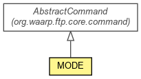

org.waarp.ftp.core.command.parameter
Class MODE
java.lang.Object
 org.waarp.ftp.core.command.AbstractCommand
org.waarp.ftp.core.command.parameter.MODE
org.waarp.ftp.core.command.AbstractCommand
org.waarp.ftp.core.command.parameter.MODE
- All Implemented Interfaces:
- org.waarp.common.command.CommandInterface
public class MODE
- extends AbstractCommand

MODE command
- Author:
- Frederic Bregier
|
Constructor Summary |
MODE()
|
|
Method Summary |
void |
exec()
|
| Methods inherited from class org.waarp.ftp.core.command.AbstractCommand |
getArg, getArgs, getCode, getCommand, getConfiguration, getObject, getSession, getValue, hasArg, invalidCurrentCommand, isNextCommandValid, setArgs, setExtraNextCommand, setObject |
| Methods inherited from class java.lang.Object |
clone, equals, finalize, getClass, hashCode, notify, notifyAll, toString, wait, wait, wait |
MODE
public MODE()
exec
public void exec()
throws org.waarp.common.command.exception.Reply501Exception,
org.waarp.common.command.exception.Reply504Exception
- Throws:
org.waarp.common.command.exception.Reply501Exception
org.waarp.common.command.exception.Reply504Exception
Copyright © 2009-2012 Waarp. All Rights Reserved.